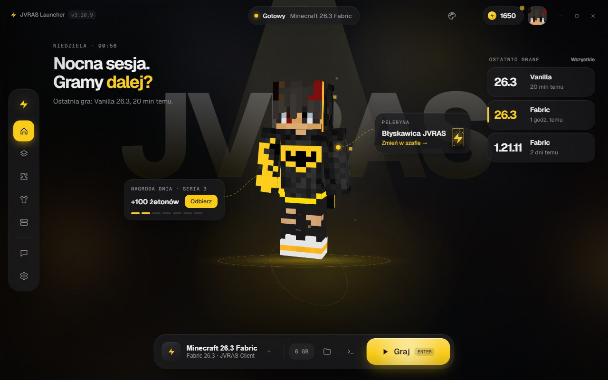
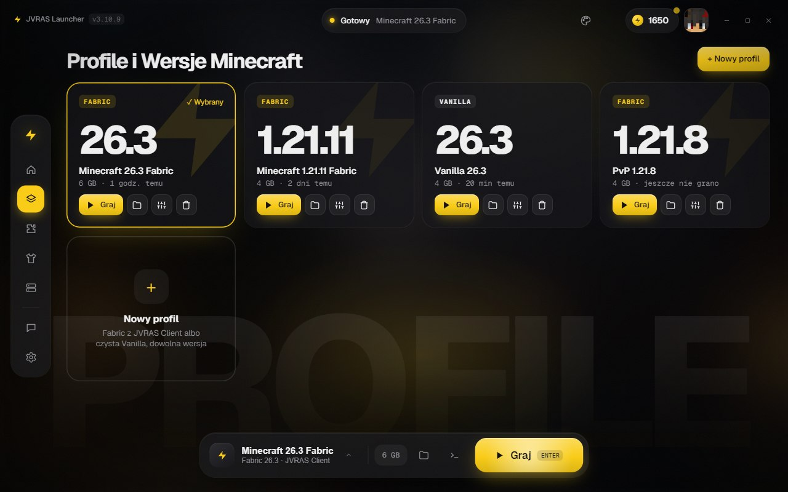
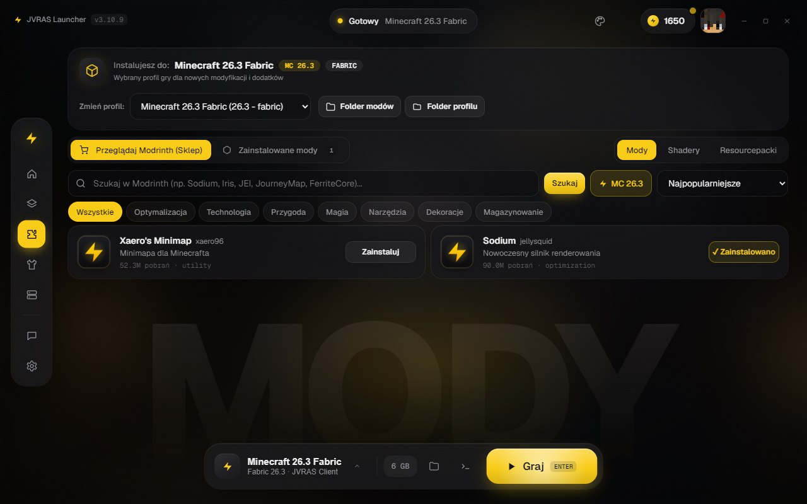
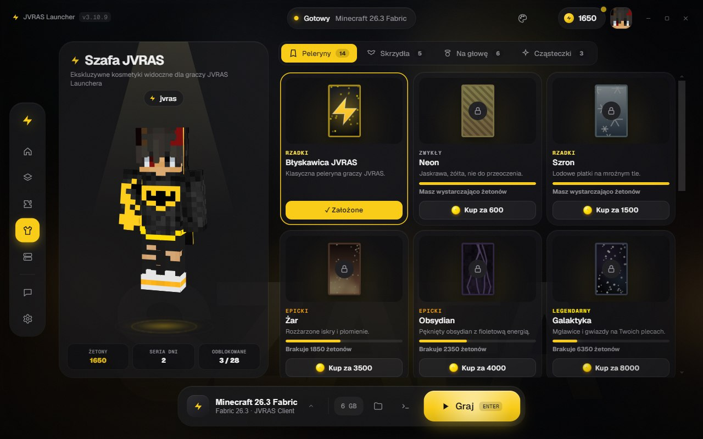
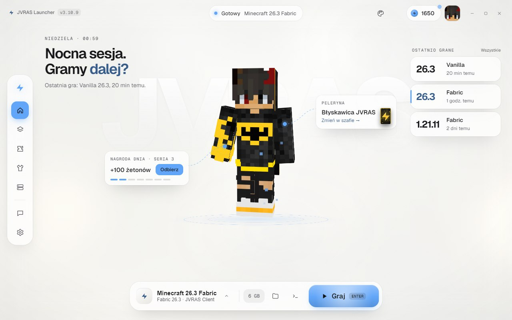
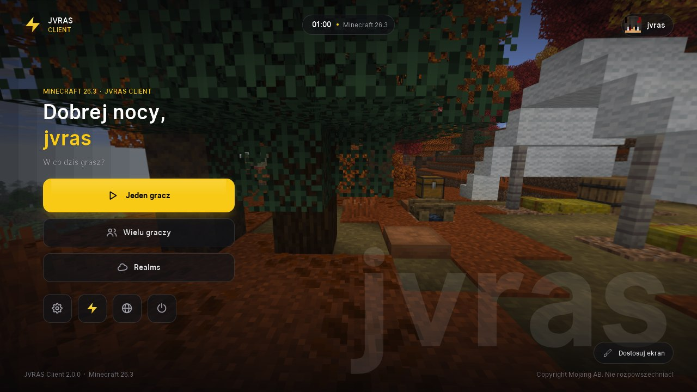

Profile i wersje
Vanilla albo Fabric, od 1.21.8 do 26.3. Każdy profil ma własne mody, pamięć RAM i ustawienia.
Launcher Minecraft z własnym klientem, kosmetykami i modami w jednym kliknięciu. Za darmo.
Vanilla albo Fabric, od 1.21.8 do 26.3. Każdy profil ma własne mody, pamięć RAM i ustawienia.
Wyszukiwarka Modrinth wbudowana w launcher: mody, shadery i paczki zasobów dobrane do wersji profilu.
Własny mod z 26 modułami: celownik, zoom, freelook, nasycenie kolorów, własne F3, bindy komend i więcej.
Peleryny, skrzydła, aureole i cząsteczki widoczne w grze. Żetony zbierasz za codzienne logowanie.
Launcher sam sprawdza nowe wersje i aktualizuje się jednym kliknięciem. Nic nie musisz pobierać ręcznie.
Logowanie przez oficjalne konto Microsoft. Hasła nie przechodzą przez nasze serwery.
Postać ze skinem, nagroda dnia, ostatnio grane wersje i wielki przycisk Graj. Enter i już jesteś w grze.
Profile Vanilla i Fabric z własnymi modami i pamięcią. Przełączasz się jednym kliknięciem.
Modrinth w środku launchera. Instalujesz, odinstalowujesz i przeinstalowujesz bez folderów.
Szafa z peleryn, skrzydeł i cząsteczek, z podglądem postaci na żywo.
Tryb jasny lub ciemny i dziesięć kolorów akcentu. Launcher wygląda tak, jak lubisz.





To ta sama postać 3D, co w launcherze. Klikaj i zobacz, jak będziesz wyglądać w grze.
Kosmetyki odblokowujesz w launcherze za żetony z codziennej nagrody.
Instaluje się sam przy każdym profilu Fabric. Własny ekran główny w grze, panel modułów pod prawym Shiftem i edytor HUD z przeciąganiem.

Tak. Launcher, JVRAS Client i podstawowe kosmetyki są za darmo. Kosmetyki z szafy kupujesz żetonami, które zbierasz za codzienne logowanie.
To standardowy komunikat dla nowych programów bez płatnego certyfikatu wydawcy. Kliknij Więcej informacji, a potem Uruchom mimo to. Pobieraj launcher wyłącznie z tej strony albo z naszego Discorda.
Do gry z kontem Microsoft tak. Konto offline działa do gry jednoosobowej i na serwerach, które je dopuszczają, ale bez żetonów i kosmetyk JVRAS.
Wszystkie wersje Vanilla oraz Fabric. JVRAS Client działa na Fabric od 1.21.8 do 26.3.
Windows 10 lub 11 (64-bit) i połączenie z internetem przy pierwszym uruchomieniu wersji. Javę launcher pobiera sam.
Pobierz launcher, zaloguj się kontem Microsoft i graj. Aktualizacje przyjdą same.
Pobierz JVRAS Launcherdla Windows